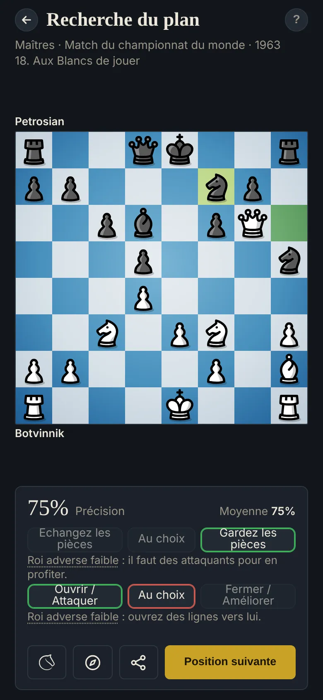

Recherche du plan
Comment trouver un plan général aux échecs
« Un mauvais plan vaut mieux que pas de plan du tout », dit le vieil adage (souvent attribué à Tchigorine). Un plan vous donne une direction pour chercher de bons coups, et vous aide à prendre de meilleures décisions. Quatre questions, dans l'ordre, peuvent y mener.

Quatre questions
- Une urgence ? Échecs, prises et menaces, des deux côtés : quelque chose à gagner, ou à défendre, comme un pion ou la qualité. (Les positions où une pièce ou plus est en jeu sont écartées : là, c'est la menace qui décide du coup.)
- Qui est mieux ? Peser les déséquilibres est un bon moyen d'en juger, et les plus décisifs devraient façonner les grandes lignes de votre plan. Équilibré veut dire le moteur à moins d'un demi-pion.
- Échanger, ou garder les pièces ? Les échanges aident le camp qui a plus de matériel, de meilleurs pions, ou qui manque d'espace. Gardez les pièces avec de meilleures pièces, plus d'espace, ou face à un roi faible.
- Attaquer, ou améliorer ? Un avantage qui s'efface (pièces actives, avance de développement, roi faible) appelle à ouvrir et attaquer. Un avantage qui dure (matériel, pions, espace) laisse le temps d'améliorer.
L'exercice
Répondez aux deux premières questions, vérifiez, puis aux deux dernières. Chaque réponse compte pour un quart du score.
Le plan suit les déséquilibres. Quand ils tirent dans les deux sens, les deux réponses comptent.